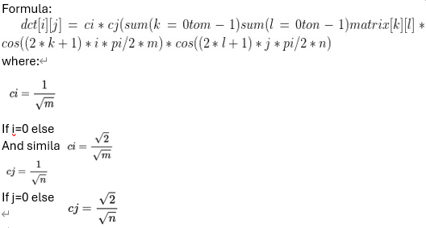
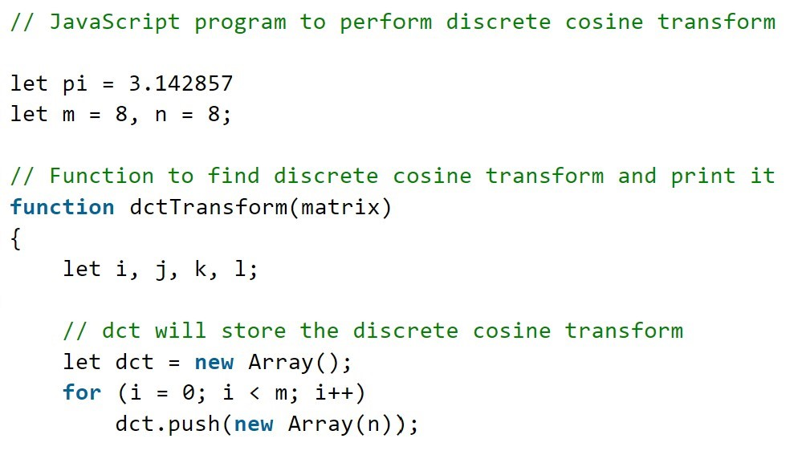
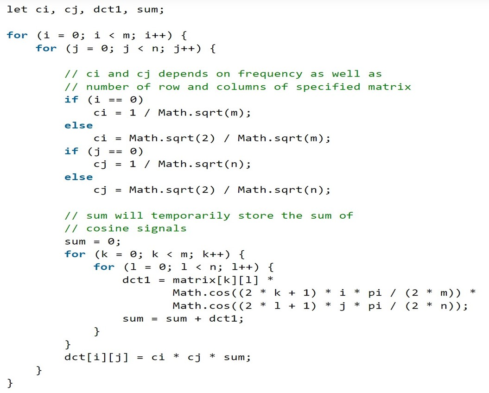
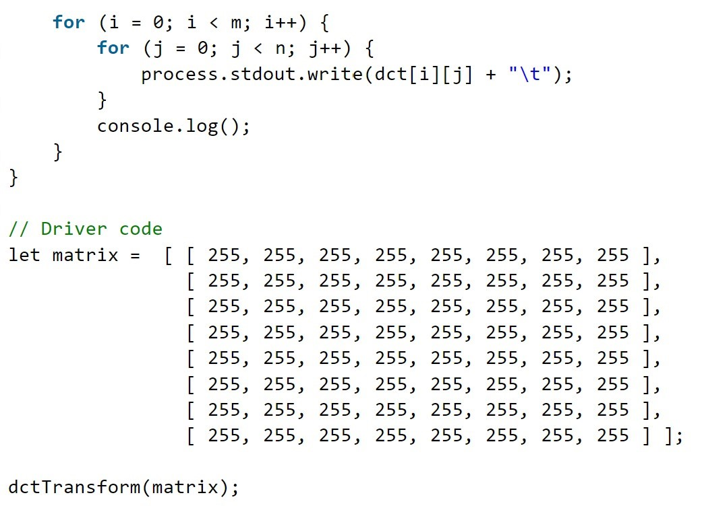
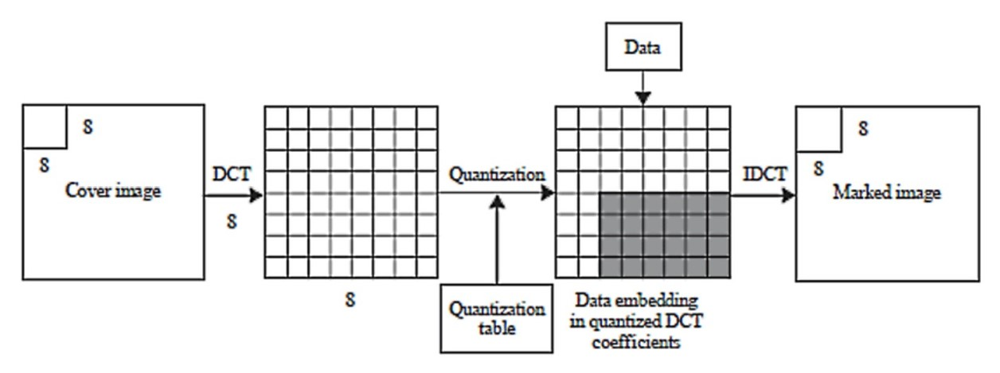

Discrete Cosine Transform (DCT) is a transform technique that has very strong energy compaction, which means a substantial amount of information is stored in an extremely low frequency component of a signal and other frequencies have very small data that can be contained by using little number of bits (usually 2 or 3 bit maximum)
Steps:
- Fetch image file information with pixel value in terms of integer within the range of 0 to 255
- Divide the pixel value in block of 8×8 matrix
- Apply Discrete Cosine Transform (DCT) on the block of data in Step 2.
- Observe that more than 90% of the data will be in the lower frequency component
- Perform a 2-dimensional Discrete Cosine Transform on the data observed in Step 4 to observe the output
1. By having a 2-dimensional variable named ‘matrix of dimension 8×8’ which has image information and another 2-dimensional variable named ‘dct of same dimension’ which has the information after applying Discrete Cosine Transform.
2.

3. Then apply the formula to all values: from i=0 to m-1 and j=0 to n-1 sum(k=0 to m-1) → denotes summation of values from k=0 to k=m-1 In this code, both m and n is equal to 8 and pi is defined as 3.142857
4.



